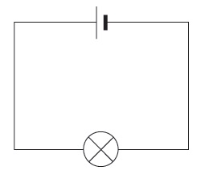
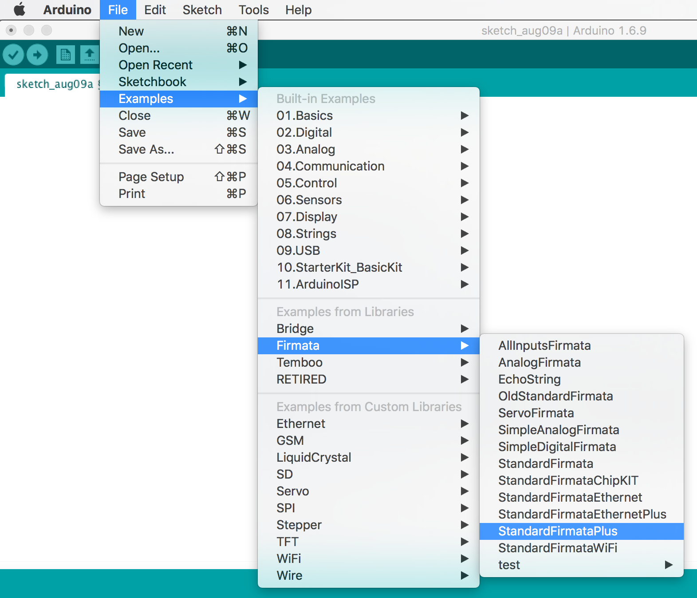
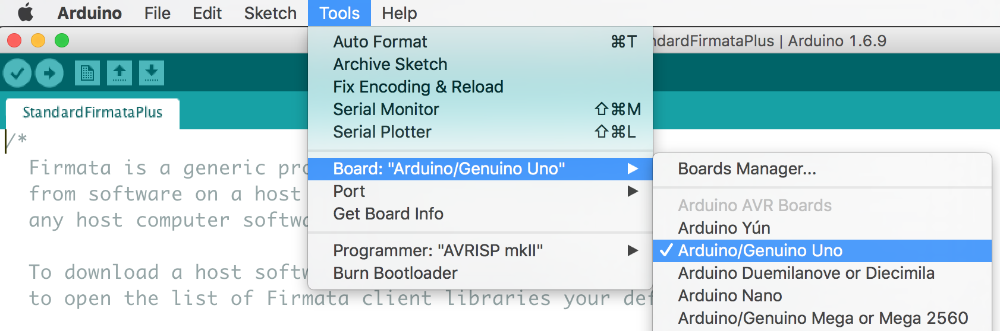
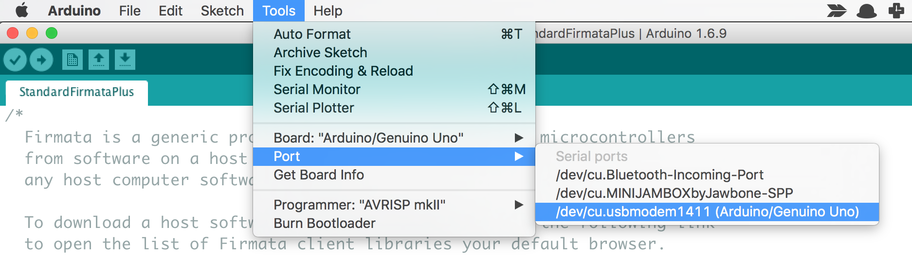
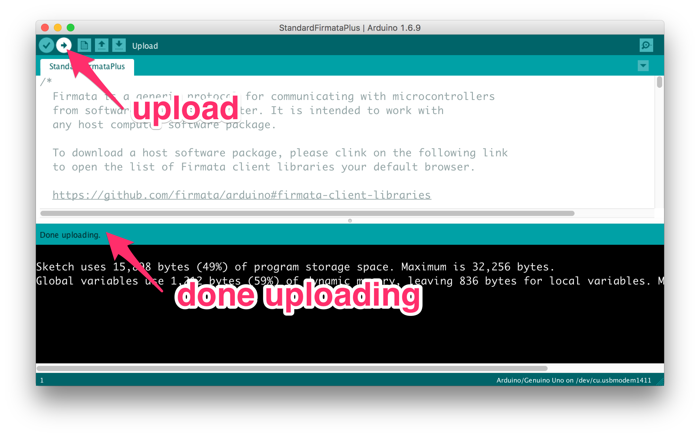
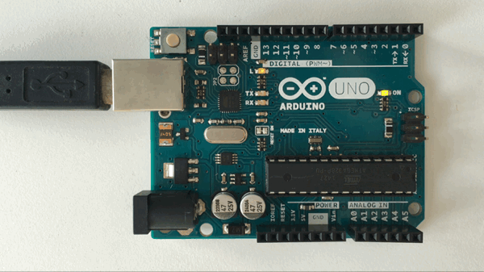

Web and Sensors
Bringing the physical world interactions
to the web
by Sayanee for General Assembly Singapore
Follow along the slides at talks.sayan.ee/web-sensors
Refer to sample code
Prepare before workshop: software and hardware
use ➡️ ⬅️ keys to navigate
Why connect hardware and the internet
track our usage
learn from nature
discover the universe
Open source
hardware + software
| Computing layers | Examples | What changed? |
|---|---|---|
| App | your ideas | fast to prototype! |
| Framework | browser api, javascript libraries | now available |
| Programming | v8 on ARM, Lua JIT, Arduino | language support |
| Operating System | Raspbian, Android | embedded linux |
| Integrated Circuits | hardware platforms | more functionality |
| Physics | physical sensors | cheaper |
The simplest circuit
We learnt from our primary school science teachers
The simplest circuit
- Breadboard
- Genuino UNO
- LED
- Resistor
- red wire
- black wire
Breadboard

The simplest circuit
- with an Arduino Uno, breadboard, LED and resistor
- no code, no programming
DEMO
The Hardware
Arduino / Genuino Uno
- 8-bit PWM output with analog write
- 10-bit ADC / resolution
- ATmega328P
- 14 Digital IO Pins
- 6 Analog Input pins
- On-board LED 13
- Huge community and library
The Abstraction
Any sufficiently advanced technology is indistinguishable from magic
~ Arthur C. Clarke
| johnny-five | laptop |
| firmata.js | laptop |
| serial-port | laptop |
| firmata program | arduino uno |
| arduino library | arduino uno |
| ATmega328p | arduino uno |
Hello world with live demo
-
Open example
StandardFirmataPlus
Hello world with live demo
- Plug in the Arduino/Genuino Uno to your laptop
- Choose board 
- Choose port 
Hello world with live demo
-
Click
Verify
Hello world with live demo
-
Click
Upload
Hello world with live demo
- Close the Arduino IDE
- Create an empty folder on Desktop
iot - Create file
1-blink.jswith sample code - Install package in cli with
npm i johnny-five -
Run the blink LED code in cli with
node 1-blink.js
9 Tiny lessons
sample code folder ~ 1 hour

Make a Mini hack
Create a tiny project in pairs with the sensor values: example
- Electronics -> Browser: Web Socket / Server sent events
- Browser -> Electronics: HTTP Get / Post
| Electronics | Web |
|---|---|
| LED, Button, Temperature, Proximity, Servo, Buzzer, Humidity, Light, Accelerometer and other examples | CSS3 Animations, DOM, Mouse events, Web Audio, Unsplash / Flickr / IFTTT / Github APIs, WebRTC, SVG, Canvas |
More to learn!
- Buy hardware: Adafruit, Sparkfun, RS, element14, 12 Geeks
- Learn about electronics: Adafruit, Sparkfun, Hackster, Contextual electronics
- Podcasts: Ask an Engineer, Spark Gap, EEV Blog, Amp Hour
- Hardware platforms: Arduino, Raspberry Pi, Particle, Tessel
- Local community meetups: SG Makers, Hackware, SG Maker Faire
- Global Community events: Nodebots, Robosub, SG AUVC, Maker Faire